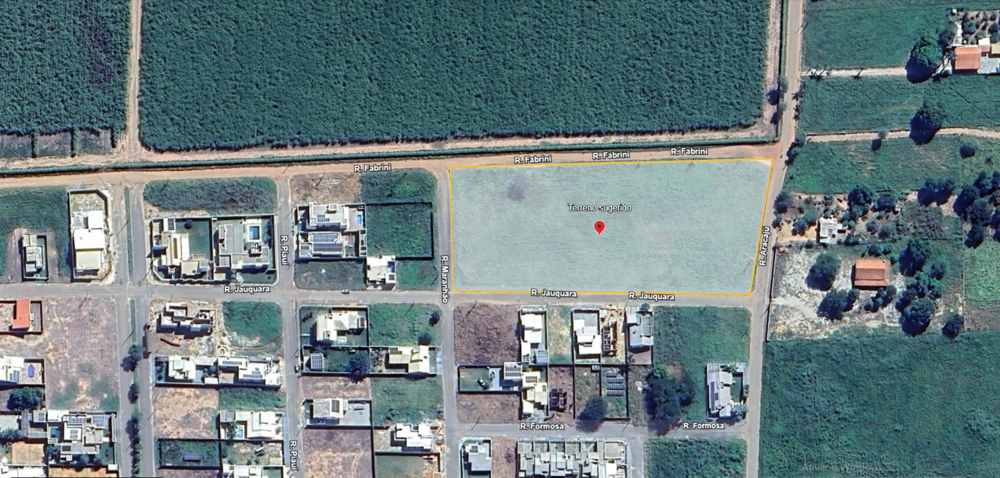

Projeto de Arquitetura V
Período Letivo: 2025/1
Estudo para CMEI em Barra do Bugres
Plataforma de Análise para a Atividade de Projeto Arquitetônico
Escopo da Atividade de Projeto
Esta plataforma sintetiza a fase de levantamento de dados para a atividade de Projeto Arquitetônico V. O objetivo deste exercício é desenvolver uma proposta de anteprojeto para um CMEI em Barra do Bugres. Embora os parâmetros do Proinfância Tipo B sirvam como referência inicial, o foco principal deste trabalho é a análise crítica e o desenvolvimento aprofundado do programa de necessidades, adequando-o ao contexto local e às mais recentes diretrizes pedagógicas.
Parâmetros de Projeto (Referência Inicial)
188
Crianças Atendidas
~1.320 m²
Área Construída
Tipo B
Modelo Proinfância
0 a 5
Faixa Etária (Anos)
Objetivos da Atividade Acadêmica
Aplicar Normativas
Estudar e aplicar a legislação e as normas técnicas pertinentes ao tema.
Solução Bioclimática
Desenvolver uma proposta arquitetônica adequada às condições climáticas locais.
Funcionalidade Pedagógica
Criar espaços que atendam com excelência ao programa de necessidades infantil.
Representação Gráfica
Exercitar a representação técnica e gráfica de um anteprojeto arquitetônico.
Usuário do Projeto e Impacto Simulado
O projeto é concebido para a primeira infância, fase crucial para o desenvolvimento. O impacto simulado na comunidade é a criação de um referencial de arquitetura educacional de qualidade, que valoriza o espaço urbano e o bem-estar social.
Usuários Considerados no Projeto:
- Crianças de 0 a 5 anos
- Professores e equipe pedagógica
- Pais e responsáveis
Distribuição por Faixa Etária
Contexto Bioclimático
Barra do Bugres está na Zona Bioclimática 7, com clima quente e úmido (Aw). A análise detalhada dos dados mensais revela uma estação seca bem definida no meio do ano e uma estação chuvosa no verão. Clique em uma métrica para ver a variação anual.
🌡️
32°C
Média das Máximas
💧
~75%
Média Anual de Umidade
🌧️
1534mm
Precipitação Total Anual
Contexto Urbano e Legal
A implantação do CMEI deve seguir o Plano Diretor de Barra do Bugres (LC Nº 012/2006), que rege o uso e ocupação do solo, garantindo que o projeto se harmonize com o desenvolvimento urbano planejado.
🗺️ Zoneamento e Uso
Verificar a conformidade com a zona urbana designada e os usos permitidos.
📏 Recuos e Ocupação
Respeitar os afastamentos e a taxa de ocupação máxima do lote.
🏗️ Infraestrutura
Garantir acesso a redes de água, esgoto, energia e vias pavimentadas.
🚗 Sistema Viário
Analisar a integração com as vias locais, prevendo acessos seguros para pedestres e veículos.
Nota para a professora: Apesar da consulta ao Plano Diretor (LC Nº 012/2006), não foram localizados os anexos ou leis complementares (como Código de Obras ou Lei de Uso e Ocupação do Solo) que especificam os índices urbanísticos quantitativos (recuos, taxa de ocupação, etc.). Para o desenvolvimento da atividade, serão adotados parâmetros de referência com base em legislações de municípios de porte similar.
Hierarquia Normativa
O projeto é regido por um conjunto de normas em diferentes esferas. Este gráfico ilustra a influência relativa de cada conjunto de diretrizes no desenvolvimento do projeto.
Programa de Necessidades Detalhado (Base FNDE)
A distribuição de áreas segue o programa funcional do Proinfância. O gráfico de rosca mostra a proporção de cada ambiente na área total de referência (~1.320 m²).
Nota para a professora: O programa do FNDE é utilizado como base referencial. A atividade de projeto se concentrará na análise e detalhamento deste programa para desenvolver uma solução arquitetônica que responda criticamente às suas diretrizes.
Etapas da Atividade de Projeto Arquitetônico
Levantamento de dados, estudo da legislação, análise climática e do programa de necessidades.
Organização e visualização dos dados coletados para embasar as decisões. O resultado é esta plataforma interativa.
Cruzamento das informações para gerar o conceito, as estratégias de projeto e a solução formal inicial.
Materialização do partido arquitetônico em desenhos técnicos, representando a solução projetual preliminar.
Análise do Terreno
O terreno selecionado para a implantação do CMEI está localizado em Barra do Bugres, no bairro São Raimundo, na quadra entre as ruas Jauquara, Maranhão, Fabrini, e Aracaju.
Vista do Terreno
Entorno Urbano

Potencialidades e Desafios
Potencialidades:
- Topografia predominantemente plana, facilitando a implantação.
- Boa dimensão, permitindo a correta disposição do programa.
- Vegetação de médio porte existente que pode ser aproveitada no projeto paisagístico.
- Localizado em área urbana consolidada com infraestrutura.
Desafios:
- Análise da orientação solar para garantir conforto térmico.
- Garantir a segurança no acesso de pedestres e veículos.
- Integração harmoniosa com a escala residencial do entorno.
Diretrizes Consolidadas de Projeto
Explore as principais recomendações para o desenvolvimento do projeto, sintetizadas a partir da análise de contexto e da estrutura normativa. Use os filtros para navegar pelas diferentes categorias de diretrizes.
🌬️ Ventilação Cruzada
Maximizar a ventilação natural em todos os ambientes, especialmente nas salas de aula e pátio coberto.
♿ Rota Acessível
Garantir uma rota contínua e acessível da entrada a todas as áreas de uso comum e pedagógico, conforme NBR 9050.
🔥 Saídas de Emergência
Dimensionar e sinalizar corretamente as rotas de fuga e saídas de emergência, conforme NBR 9077.
☀️ Proteção Solar
Utilizar beirais generosos, brises e vegetação para proteger as fachadas e aberturas da insolação direta.
🎨 Espaços Flexíveis
Projetar salas de atividades que permitam diferentes arranjos de layout para múltiplas atividades pedagógicas.
🚽 Sanitários Adaptados
Prever sanitários acessíveis para crianças e adultos em todos os blocos funcionais.
🛡️ Materiais Seguros
Especificar materiais de acabamento atóxicos, de fácil limpeza e que não propaguem chamas.
🌳 Integração Interior-Exterior
Promover a conexão visual e física entre as salas de aula e os espaços externos (solários e parquinhos).
💧 Cobertura e Drenagem
Projetar coberturas com bom isolamento térmico e um sistema de drenagem pluvial eficiente para chuvas intensas.
🤸 Psicomotricidade
Criar áreas com desafios motores (subir, descer, equilibrar) para desenvolver a coordenação e consciência corporal.
🎨 Exploração Sensorial
Incluir painéis com diferentes texturas, jardins de cheiros e caixas de areia para estimular os múltiplos sentidos.
🌱 Horta Pedagógica
Destinar um espaço para uma pequena horta, ensinando sobre natureza, alimentação e responsabilidade.
💧 Brincadeiras com Água
Projetar uma área externa segura com pontos de água para atividades lúdicas e sensoriais nos dias quentes.
Referências Bibliográficas e Normativas
- ASSOCIAÇÃO BRASILEIRA DE NORMAS TÉCNICAS. NBR 15220: Desempenho térmico de edificações. Rio de Janeiro, 2005.
- ASSOCIAÇÃO BRASILEIRA DE NORMAS TÉCNICAS. NBR 9050: Acessibilidade a edificações, mobiliário, espaços e equipamentos urbanos. Rio de Janeiro, 2020.
- ASSOCIAÇÃO BRASILEIRA DE NORMAS TÉCNICAS. NBR 9077: Saídas de emergência em edifícios. Rio de Janeiro, 2001.
- BARRA DO BUGRES. Prefeitura Municipal. Lei Complementar Nº 012/2006. Institui o Plano Diretor de Barra do Bugres e dá outras providências. Barra do Bugres, MT, 2006.
- BRASIL. Ministério da Educação. Fundo Nacional de Desenvolvimento da Educação (FNDE). Caderno de Projetos – Proinfância. Brasília: FNDE, 2012.
- BRASIL. Ministério da Educação. Fundo Nacional de Desenvolvimento da Educação (FNDE). Ações e Programas: Proinfância. Disponível em: https://www.gov.br/fnde/pt-br/acesso-a-informacao/acoes-e-programas/programas/proinfancia. Acesso em: 30 ago. 2025.
- BRASIL. Ministério da Educação. Fundo Nacional de Desenvolvimento da Educação (FNDE). Projeto de Transposição - Tipo B. Metodologias Inovadoras. Disponível em: https://www.gov.br/fnde/pt-br/acesso-a-informacao/acoes-e-programas/programas/proinfancia/metodologias-inovadoras-mi/projeto-de-transposicao-tipo-b. Acesso em: 30 ago. 2025.
- BRASIL. Ministério da Educação. Fundo Nacional de Desenvolvimento da Educação (FNDE). Orientações para preenchimento no SIMEC da solicitação de construção de creches dos Tipos B e C. Disponível em: https://www.fnde.gov.br/phocadownload/programas/pro_infancia/Manuais/orientacoes_preenchimento_simec_solicitacao_creches_tipos_bc_mi.pdf. Acesso em: 30 ago. 2025.
- BRASIL. Ministério da Educação. Conselho Nacional de Educação. Resolução CNE/CEB nº 5, de 17 de dezembro de 2009. Fixa as Diretrizes Curriculares Nacionais para a Educação Infantil. Diário Oficial da União, Brasília, 18 de dezembro de 2009.
- BRASIL. Ministério da Educação. Conselho Nacional de Educação. Resolução CNE/CEB Nº 1, de 17 de outubro de 2024. Institui as Diretrizes Curriculares Nacionais para a Formação Inicial de Professores da Educação Infantil. Disponível em: https://abmes.org.br/arquivos/legislacoes/Resolucao-cne-ceb-001-2024-10-17.pdf. Acesso em: 30 ago. 2025.
- CLIMATE-DATA.ORG. Clima Barra do Bugres. Dados climatológicos para Barra do Bugres. Acesso em: 30 ago. 2025.
- MIRANDA, Soneize Auxiliadora de. Material da disciplina de Projeto de Arquitetura V (A1-PA5-ATIVIDADES-TEMAS_E_GRUPOS-2025-1). UNEMAT, Barra do Bugres, 2025.